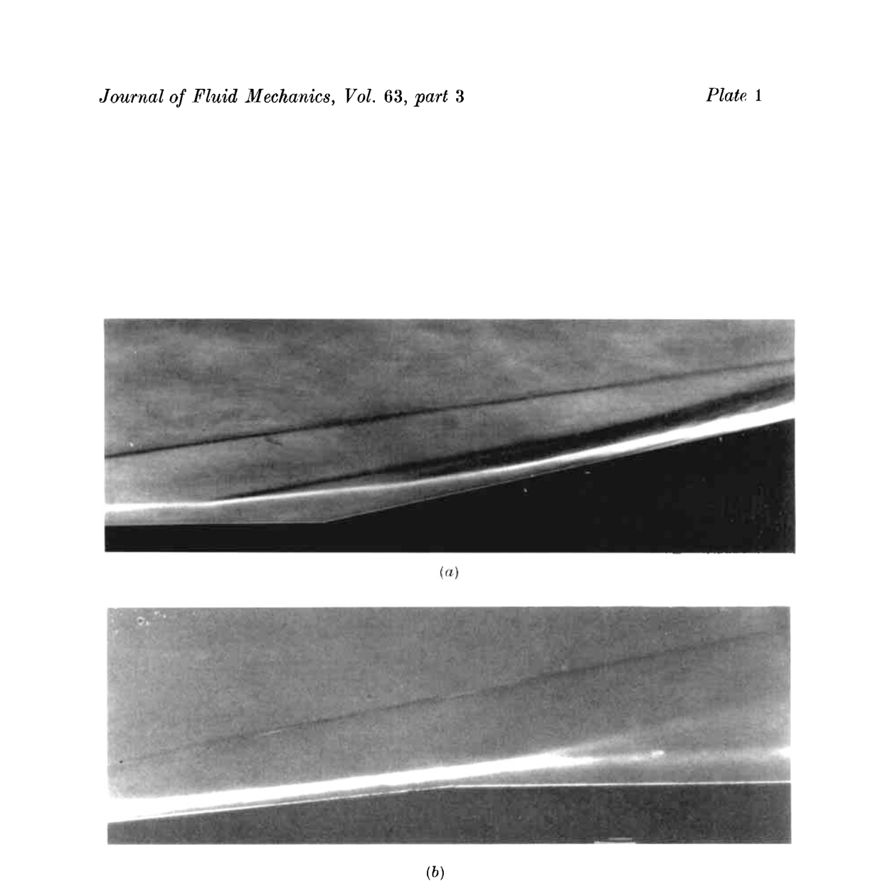
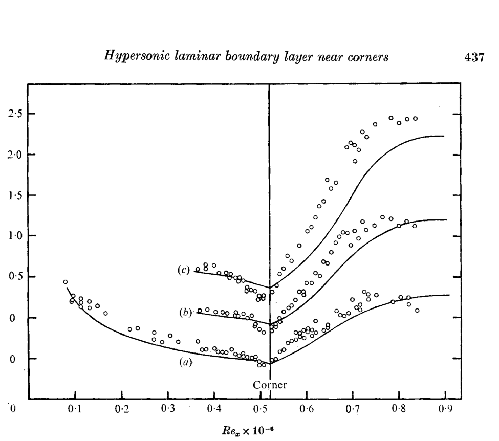
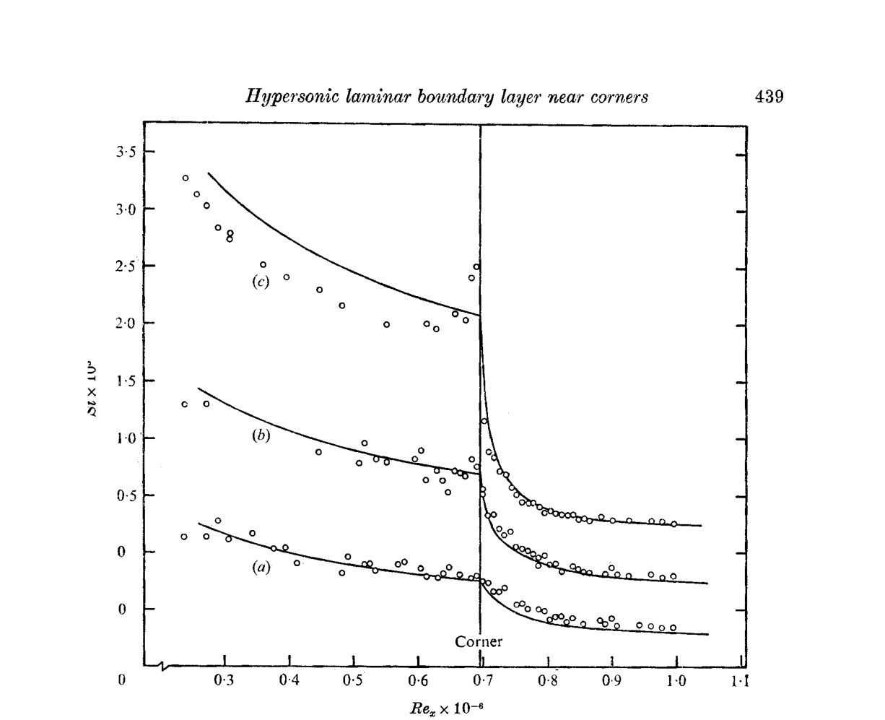
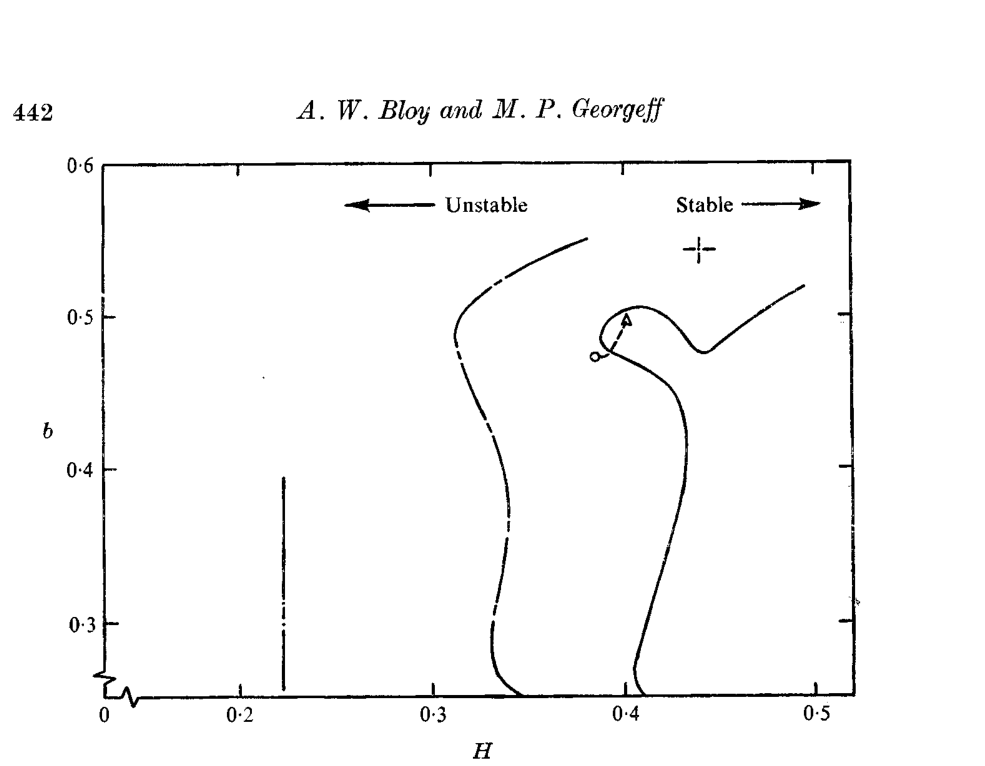

01中文摘要
把Klineberg的动量积分方法用于高超声速二维层流粘性-无粘干扰，并用M=12.2、冷壁条件下的尖压缩拐角与膨胀拐角实验检验。测量表面压力与热流，与理论预测比较；在附着、起始分离和充分分离三种状态下均吻合良好。文中还比较基于Klineberg公式的不同理论变体，认为只要包含能量积分方程，积分方法就能较好描述完整边界层方程；控制方程稳定性（亚临界/超临界、Crocco-Lees临界点、是否需要“跳跃”）是数学模型的属性，不应赋予边界层物理意义。最后给出高超声速冷壁起始分离数据的关联。
02阅读说明
类型：期刊论文（Journal of Fluid Mechanics, 1974, vol. 63, part 3, pp. 431–447），实验测量与积分理论评估并重。材料为18页全文文本与5幅抓取图件；PDF文本层对公式、符号和部分图注有明显OCR错乱，已用原PDF第2–3、5、10、12页核对式(1)–(5)、实验段与图7说明。图内坐标和逐点数值不可读，定量结论以正文明确数值为准。信息完整度较高：来流条件、模型几何、测点与理论流程较完整；未给测量不确定度，二维性未直接验证。 文章类型：期刊
03一句话核心与三句话摘要
Mach 12.2冷壁压缩/膨胀角实验检验Klineberg积分法：附着、起始分离与完全分离均吻合良好。
- 高超声速翼舵与进气道压缩面上的层流粘性-无粘干扰强烈，Klineberg积分法虽在低马赫数下表现良好，但缺少Mach 12.2冷壁条件下的系统检验。 AI概括
- 在Imperial College 1号炮风洞中以Mach 12.2、单位Re∞=0.87×10^5 in^-1、Tw/T0=0.22测量8°/10°/12°压缩角与-5°/-10°/-20°膨胀角的表面压力与热流，并与Klineberg方法及Lees-Reeves等变体比较。 原文明确
- 结果显示该方法对附着、起始分离和完全分离流动均给出良好预测；膨胀角-20°处实验上游影响约10δ而理论未预测；能量积分方程必不可少，稳定性、Crocco-Lees临界点与‘jump’只是数学性质而非边界层物理特征。 AI概括
04核心内容清单
| 要点 | 类型 | 重要性 | 原文依据 | 属性 |
|---|---|---|---|---|
| 实验条件为Mach 12.2、p0=1600 psia、T0=1300 K、单位Re∞=0.87×10^5 in^-1、Tw/T0=0.22、有效运行约20 ms。 | 实验条件 | A | p434，第3节 | 原文明确 |
| 压缩角模型为8 in平板加5 in襟翼，襟翼角8°/10°/12°；膨胀角模型为5 in平板加8 in前缘襟翼，角度-5°/-10°/-20°；展长5 in、前缘厚度约0.002 in。 | 模型几何 | A | p434–435，第3节 | 原文明确 |
| Klineberg积分法对压缩角与膨胀角的附着、起始分离和完全分离流动总体给出良好预测。 | 核心结论 | A | p431摘要；p436–446，第4–6节 | 原文明确 |
| 压缩角最大压力比与最大热流率预测准确；最终压力比高于无粘值，用前缘激波与角点激波的双激波系可更好估算。 | 实验结果与理论比较 | A | p437，第4.1节，图2、图3 | 原文明确 |
| 压缩角襟翼上边界层对角点扰动的响应比理论更快，作者归因于Lees-Reeves激波干扰模型不精确，而非Mach线传播滞后。 | 作者解释 | B | p437，第4.1节 | 原文明确 |
| 膨胀角-20°时角点上游热流被高估约10–15%，角点下游热流与压力吻合很好。 | 实验结果与理论比较 | A | p438–439，第4.2节，图4、图6 | 原文明确 |
| 膨胀角-20°的实验上游影响约为10个边界层厚度，而稳定控制方程的理论不预测上游影响；其余角度与实验一致。 | 实验结果与理论差异 | A | p439，第4.2节 | 原文明确 |
| 起始分离数据在Sw=-0.8下按(M∞αw)_i=f(x̄L,Sw)关联，理论曲线与冷壁实验数据吻合良好。 | 经验关联 | A | p439–441，第4.3节，式(5)，图6 | 原文明确 |
| Lees-Reeves方法不含能量方程，不能正确描述热流系数与摩阻系数分布；含能量方程的Klineberg方法及修改(ii)(iii)均与实验吻合。 | 方法比较 | A | p442–443，第5.2节，图8 | 原文明确 |
| 能量积分方程必须保留，速度与焓剖面参数必须解耦；否则对非绝热干扰的热流描述不准确。 | 核心结论 | A | p445–446，第5.6节、第6节 | 原文明确 |
| 稳定/不稳定、Crocco-Lees临界点和‘jump’是解析模型的数学性质，不应与边界层物理特征相联系。 | 理论判断 | A | p443–444，第5.3节；p445–446，第6节 | 原文明确 |
| 无需为获得良好实验吻合而把当地压力梯度从当地因变量‘unhook’；‘hooked’的修改(ii)(iii)同样给出良好结果。 | 理论判断 | A | p445，第5.5节 | 原文明确 |
05引言：研究问题与领域缺口
第1节（p431–432）指出，高超声速飞行器翼-襟翼连接处和进气道压缩斜面上会出现强粘性-无粘干扰，此时把粘性视为对已有无粘流的小扰动不再适用，需要边界层方程与描述内外流耦合的‘coupling’方程联立。作者回顾Lees & Reeves（1964）经Holden（1965）、Klineberg（1968）发展的积分方法：用Cohen-Reshotko相似解给出剖面量关系，积分动量、动量矩和能量方程，并以连续性方程的积分形式作为耦合方程；该方法在低马赫数已与实验吻合良好。缺口是缺乏Mach 12.2冷壁条件下的检验。本文目标是评估Klineberg方法对二维层流锐压缩角与膨胀角的预测能力，并讨论稳定性、临界点和压力梯度‘hooking’等分析难题（p431–432）。
06流动条件与几何构型
| 项目 | 数值/描述 | 依据 | 备注 |
|---|---|---|---|
| 来流马赫数 M∞ | 12.2 | p434，第3节；图3、图4、图6图注 | |
| 驻室压力 p0 | 1600 psia | p434，第3节 | |
| 驻室温度 T0 | 1300 K | p434，第3节 | |
| 自由流单位雷诺数 Re∞ | 0.87×10^5 in^-1 | p434，第3节 | 图3图注OCR写作0.87×10^6 in^-1，与正文及图4、图6图注不一致；以正文0.87×10^5 in^-1为准并列入开放问题 |
| 壁温比 Tw/T0 | 0.22（冷壁） | 图3、图4、图6、图1图注；p431摘要称cold-wall | |
| 有效运行时间 | 约20 ms | p434，第3节 | |
| 风洞与喷管 | Imperial College no.1 gun tunnel，Mach 12.2 contoured nozzle | p434，第3节 | |
| 压缩角模型 | 8 in弦长零迎角锐平板，下游铰接5 in弦长襟翼；襟翼角8°、10°、12°；展长5 in；前缘厚度约0.002 in | p434–435，第3节 | |
| 膨胀角模型 | 5 in弦长零迎角平板加8 in弦长前缘襟翼；襟翼角-5°、-10°、-20°；展长5 in；前缘厚度约0.002 in | p435，第3节 | |
| 流动状态 | 二维层流；层流由纹影白线、平稳热流迹线、分离点随Re上移及Pitot剖面确认；二维性仅以展向压力/热流均匀为必要条件，未直接检验 | p435，第3节 | |
| 冷壁参数 Sw | 图6取Sw=-0.8；S=(h0/h0e)-1，故对应强冷壁 | p432式(1)下方定义；p440–441，第4.3节，图6 | |
| 气体与比热比 | 文中未提及（仅给出Mach 12.2炮风洞条件） | 全文 |
07核心现象与关键参数
| 参数 | 定义 | 数值 | 关系/说明 | 依据 |
|---|---|---|---|---|
| M∞ | 自由流马赫数 | 12.2 | 控制可压缩性与强干扰程度 | p434 |
| Re∞ | 自由流单位雷诺数（每英寸） | 0.87×10^5 in^-1 | 决定边界层厚度与分离趋势；图3图注OCR为0.87×10^6 in^-1，存在不一致 | p434 |
| Tw/T0 | 壁温与驻室总温之比 | 0.22 | 冷壁条件，影响热流与剖面形状 | 图注；p431 |
| Sw | S=(h0/h0e)-1在壁面的值 | 图6取-0.8 | 冷壁相似参数；起始分离关联中的壁温参数 | p432；p440–441 |
| H | 速度剖面形状因子，H=θi/δi* | 随流动变化；作为Klineberg方法的剖面参数之一 | 与b共同确定Cohen-Reshotko剖面量关系 | p432–433 |
| b | 总焓剖面参数，b=-∂/∂η(S/Sw0) | 随流动变化；第二个剖面参数 | 与H共同闭合积分方程 | p433 |
| Re | Re=a∞M∞δi*/ν∞ | 由当地δi*计算 | 式(1)–(3)右端无量纲因子 | p432 |
| M∞αw | 自由流马赫数与壁面当地倾角之积 | 图6纵轴约0–8 | 起始分离关联的纵坐标 | p440–441，式(5)，图6 |
| x̄L | 以L为特征长度的流向坐标；L取前缘到铰链线的距离 | 图6横轴约0–5 | 起始分离关联的横坐标；具体归一化写法受限于材料，无法确认 | p440–441，图6 |
| B | B=(aepe)/(a∞p∞) | 按当地外流条件计算 | 式(1)–(3)的粘性-无粘耦合系数 | p432 |
| C | C=(μ/μ∞)(T/Te) | 按当地温度与粘度计算 | 式(1)–(3)的物性因子 | p432 |
08方法与数据
实验在Imperial College 1号炮风洞的Mach 12.2型面喷管中完成；驻室条件p0=1600 psia、T0=1300 K，对应自由流单位雷诺数0.87×10^5 in^-1，有效运行时间约20 ms（p434）。压缩角模型为8 in弦长、零迎角锐平板，下游端铰接5 in弦长襟翼，襟翼角8°、10°、12°；膨胀角模型为5 in弦长零迎角平板加8 in弦长前缘襟翼，襟翼角-5°、-10°、-20°，以避免尾缘激波诱导分离；模型展长5 in，前缘厚度约0.002 in（p434–435）。测量包括薄膜铂热流计、沿中心线及偏离中心线的静压孔、C.E.C. 4/326 0–10 psia应变式压力计和Pitran PTM3 0–25 psid压敏晶体管，以及单火花单光路聚焦纹影（p435）。层流由边界层内清晰白线、平稳热流迹线、分离点随Re增大而上移的纹影趋势和10°襟翼后Pitot剖面与van Driest零压力梯度理论比较共同确认；未做直接的二维性检验，但满足展向压力与热流均匀这一必要条件（p435）。理论部分采用Stewartson变换后的动量、动量矩、能量积分方程(1)–(3)与由连续性积分得到的耦合方程(4)，剖面量由Cohen-Reshotko相似解以H和b两个参数闭合；外部无粘流除角点激波熵跃变外采用Prandtl-Meyer关系，角点熵跃变按等效入射激波近似（p432–433）。数值上给定上游强/弱干扰渐近平板解与下游Blasius条件，用四阶Runge-Kutta向下游积分，迭代上游参数以满足下游条件；遇到不稳定段可施加‘jump’，穿过Crocco-Lees临界点时用外推（p434）。作者强调比较是纯预测性的，未对理论与实验做匹配（p436）。
| 项目 | 内容 | 依据 | 备注 |
|---|---|---|---|
| 实验设施 | Imperial College no.1 gun tunnel，Mach 12.2型面喷管；p0=1600 psia、T0=1300 K；有效运行约20 ms | p434，第3节 | |
| 压缩角模型与角度 | 8 in平板+5 in襟翼；α=8°、10°、12°；展长5 in；前缘厚度约0.002 in | p434–435，第3节 | |
| 膨胀角模型与角度 | 5 in平板+8 in前缘襟翼；α=-5°、-10°、-20°；展长5 in；前缘厚度约0.002 in | p435，第3节 | |
| 热流测量 | 薄膜铂热流计；模拟网络把表面温度信号转换为热流率（Hunter 1969） | p435，第3节 | |
| 压力测量 | 静压孔+C.E.C. 4/326 0–10 psia非粘贴应变计（灵敏度4 mV/psi，低于约0.05 psia受电路噪声限制）+Pitran PTM3 0–25 psid压敏晶体管（标称4 V/psid） | p435，第3节 | |
| 流场显示 | 单火花单光路聚焦纹影；边界层内白线边缘用于估计边界层厚度 | p435，第3节 | |
| 层流判据 | 清晰白线+平稳热流迹线；12°模型固定Tw/T0、改变Re时分离点随Re上移；10°襟翼峰值压力下游Pitot剖面与van Driest零压力梯度理论比较 | p435，第3节 | |
| 二维性检查 | 未做直接检验；仅确认展向压力与热流分布均匀这一必要条件 | p435，第3节 | |
| 理论方法 | Stewartson变换后的动量、动量矩、能量积分方程(1)–(3)+连续性耦合方程(4)；Cohen-Reshotko相似解以H、b闭合；Prandtl-Meyer外流，角点激波熵跃变按等效入射激波处理 | p432–433，第2.1节 | |
| 数值流程 | 给定上游强/弱干扰渐近解与下游Blasius条件；四阶Runge-Kutta向下游积分；迭代上游参数满足下游条件；必要时施加‘jump’；Crocco-Lees临界点外推通过 | p434，第2.3节 | |
| 对比方法 | (i) Lees-Reeves（不含能量方程）；(ii) J=KH线性化；(iii) 以壁面动量方程替代动量矩方程；与Klineberg原方法比较 | p441–443，第5.1–5.2节 | |
| 误差与不确定度 | 文中未提及测量不确定度；比较为纯预测性，未作理论-实验匹配 | p436，第4节 |
09核心推导与公式
把二维可压缩层流边界层的动量、动量矩、能量方程写成Stewartson变换下的积分形式，再用连续性方程沿边界层积分得到内外流耦合方程；剖面量由Cohen-Reshotko相似解以速度形状因子H和总焓剖面参数b闭合，外部无粘流用Prandtl-Meyer关系并在角点激波处引入熵跃变，从而把问题化为可用Runge-Kutta法向下游积分的常微分方程组。
关键假设
- 定常、二维、可压缩层流边界层。
- 采用Stewartson变换，以Y、U为变换后坐标与速度分量。
- 剖面量关系统一由Cohen-Reshotko相似解提供，用H和b两个参数描述。
- 外部无粘流除角点激波外采用Prandtl-Meyer关系；角点激波熵跃变按等效入射激波近似。
- Klineberg方法忽略边界层内法向压力梯度。
- 上游边界条件取强或弱干扰渐近平板解，下游取Blasius解；二者必须同时给定。
- 实验为冷壁Tw/T0=0.22，但理论本身允许非绝热壁面。
推导过程
对定常二维可压缩层流边界层应用Stewartson变换，得到动量、动量矩和能量方程的积分形式(1)–(3)。左端含形状因子H、J、T*对流向及对lnMe的导数，右端为壁面剪切/热流与雷诺数组成的项。
以δi、δi*、θi、θi*等积分厚度定义形状因子H、J及Z、R、P、Q、E、T*；B、C、S与Re分别表征外流压力、物性、总焓和雷诺数。这些量把壁面剪切与热流嵌入积分方程。
把连续性方程沿边界层积分，将外流的发展与边界层增长联系起来，得到耦合方程；其中αw为当地表面倾角，θe为边界层边缘流线倾角。
将耦合方程变换到Stewartson坐标，得到式(4)。其中F与m由H、Sw、E和Me定义；式(4)把dlnδi*/dx、dH/dx、dE/dx、dlnMe/dx与dlnpe/dx联系起来，右端含tan(θe-αw)/δi*。
剖面量H、J等之间的关系由Cohen-Reshotko相似解给出；速度剖面参数取H，总焓剖面参数取b（以Sw0归一化）。于是式(1)–(4)成为关于Me、δi*、H、b的封闭常微分方程组。
边界层边缘流线倾角θe与当地静压pe通过外流模型与Me联系。Klineberg表述在干扰区内使用Prandtl-Meyer关系，唯穿过角点激波时存在显著熵变；该熵变按等效入射激波近似（Lees & Reeves 1964）。
粘性-无粘干扰不是适定的初值问题，解同时依赖上下游条件。上游取强或弱干扰渐近平板解，下游取Blasius解。先确定上游条件，视稳定性与预期上游影响决定是否施加‘jump’，再用四阶Runge-Kutta向下游积分；若下游条件不满足，扰动上游参数并迭代。遇到Crocco-Lees临界点时用外推法平滑通过。
由Klineberg表述可证明控制粘性-无粘干扰的参数为M∞αw、x̄L与Sw，故几何相似体的起始分离条件（下标i）必须写成式(5)的函数形式。
适用边界：理论忽略法向压力梯度；角点激波与熵跃变采用等效入射激波近似；剖面量关系依赖Cohen-Reshotko相似解及H、b参数化；临界边界与稳定性强烈依赖方程形式和剖面关系；二维性未直接验证；实验无不确定度，且未直接测量摩阻；图3图注Re∞指数与正文不一致。
10结果：主要发现与关键证据
压缩角（p437，图2、图3）：理论与实验总体吻合良好；平板弱干扰区实验数据略高于理论，作者归因于理论未计的前缘小钝度。越过襟翼后，边界层特征对角点扰动的响应比理论更快，作者认为更可能源于Lees-Reeves激波干扰模型不精确，而非扰动沿Mach线在边界层内传播的滞后，因为膨胀角比较中未见此类滞后。最大压力比与最大热流率预测准确；最终压力比高于无粘值，原因是激波系总压损失小于无粘理论，用前缘激波与角点激波组成的双激波系可更好估算（p437）。膨胀角（p438–439，图4、图6）：总体吻合良好；角点上游热流除最大倾角外描述良好，-20°时高估约10–15%；压力比略被低估，可能同样源于前缘钝度；角点下游吻合很好。理论因控制方程稳定而不预测上游影响，这与实验一致，唯-20°例外，其实验上游影响量级约为10个边界层厚度（p439）。作者指出Klineberg方法忽略法向压力梯度，而真实流中存在大法向压力梯度仍能吻合，说明高超声速边界层内法向压力梯度影响较小（p439）。起始分离关联（p439–441，图6）：二维起始分离定义为干扰区仅一点零摩阻；由于摩阻难测，实验以压力分布拐点、热流由尖谷变为圆凹极小或分离激波出现来判断。用Klineberg表述可证明控制参数为M∞αw、x̄L和Sw，因而几何相似体的起始分离条件为(M∞αw)_i=f(x̄L,Sw)；在Sw=-0.8下整理全部冷壁数据，理论与实验吻合良好（p440–441）。分析方法比较（p441–445，图7、图8）：临界边界位置强烈依赖方程与剖面关系的取法；Lees-Reeves方法不含能量方程，不能正确描述热流系数（及摩阻系数）分布，而修改(ii) J=KH与(iii)以壁面动量方程替代动量矩方程的结果与Klineberg相近且均与实验吻合；修改(ii)(iii)不需要‘jump’也未遇到Crocco-Lees临界点（p442–443）。
| 发现 | 证据 | 证据类型 | 强度 | 位置 | 属性 |
|---|---|---|---|---|---|
| Klineberg积分法对Mach 12.2冷壁压缩角与膨胀角的附着、起始分离和完全分离流动总体预测良好。 | 摘要明确给出good for attached, incipient and fully separated flows；第4节图2–图6的压力、热流比较支持。 | 核心结论 | 强 | p431摘要；p436–441，第4节 | 原文明确 |
| 压缩角最大压力比和最大热流率预测准确，但最终压力比高于无粘值。 | p437指出maximum values accurately predicted；最终压力比高于inviscid值，归因于激波系总压损失较小，双激波系可改善估算。 | 实验结果与理论比较 | 强 | p437，第4.1节，图2、图3 | 原文明确 |
| 压缩角襟翼上边界层对角点扰动的响应比理论更快，不能用Mach线传播滞后解释。 | p437明确说respond more rapidly than predicted，并指出膨胀角比较中未见此类滞后；作者倾向归因于Lees-Reeves激波干扰模型不精确。 | 作者解释 | 中 | p437，第4.1节 | 原文明确 |
| 膨胀角-20°时角点上游热流被高估约10–15%，且实验上游影响约10δ，而稳定方程理论不预测上游影响。 | p438–439明确给出overpredicted by approximately 10–15%；p439给出上游影响为10个边界层厚度量级。 | 实验结果与理论差异 | 强 | p438–439，第4.2节，图4、图6 | 原文明确 |
| 起始分离数据可按(M∞αw)_i=f(x̄L,Sw)在Sw=-0.8下关联，理论与冷壁实验吻合良好。 | p440–441给出式(5)并在图6中整理多来源数据；正文称关联clearly well described。 | 经验关联 | 强 | p440–441，第4.3节，式(5)，图6 | 原文明确 |
| 不含能量方程的Lees-Reeves方法不能正确描述热流系数和摩阻系数分布。 | p442–443图8比较显示Lees-Reeves的热流分布与实验不符；作者称其inadequate。 | 方法比较 | 强 | p442–443，第5.2节，图8 | 原文明确 |
| 含能量方程并解耦速度/焓剖面参数是准确描述非绝热粘性-无粘干扰的必要条件。 | p445–446明确说necessary to employ the energy integral equation；并称在此基础上方程或剖面关系选择不关键。 | 核心结论 | 强 | p445–446，第5.6节、第6节 | 原文明确 |
| 稳定性、Crocco-Lees临界点和‘jump’是解析模型的数学性质，不是边界层物理特征。 | p443–444指出稳定性强烈依赖方程与剖面关系，而解对它们不敏感；p445–446明确称mathematical properties of the analytical model。 | 理论判断 | 强 | p443–446，第5.3、5.4、第6节 | 原文明确 |
| 无需把当地压力梯度从当地因变量‘unhook’也能获得良好实验吻合。 | p445指出‘hooked’的修改(ii)(iii)在压力平台区给出与‘unhooked’方法相当或更好的结果。 | 理论判断 | 强 | p445，第5.5节 | 原文明确 |
| 高超声速边界层内法向压力梯度对整体干扰的影响可能较小。 | p439指出理论忽略法向压力梯度却在存在大法向压力梯度的真实流中吻合良好，故推断其影响small；这是间接推断。 | AI推断 | 中 | p439，第4.2节 | AI推断 |
11机制解释与论证链
压缩角处外流受迫转折产生逆压梯度，边界层增厚并通过位移效应向上游传递，强烈时出现分离与再附；膨胀角处顺压梯度使边界层变薄，控制方程处于稳定区，理论上不产生上游影响。积分方法通过耦合方程把边界层位移厚度与外流压力/马赫数联立：能量方程决定总焓剖面和壁面热流，动量与动量矩方程决定速度剖面和摩阻；角点激波的总压损失改变最终压力比。冷壁条件下焓剖面与速度剖面不再相似，必须用两个独立参数描述。
12讨论：结论、贡献与局限
第5.3–5.6节（p443–445）讨论机理与含义：稳定/不稳定状态、Crocco-Lees临界点、速度剖面临界点及为进入分离而施加的‘jump’都随方程形式和剖面关系而变，而最终解对它们相对不敏感；因此这些性质是解析模型的数学性质，不应赋予边界层物理意义。Stewartson & Williams（1969）包含法向压力梯度的严格分析也未发现类似稳定性变化，支持这一判断。作者进一步指出，将压力梯度‘hooked’到当地因变量并不必然导致压力平台区预测变差；修改(ii)(iii)就是‘hooked’的，却在压力平台区给出与‘unhooked’方法相当或更好的结果，因此无需为了获得好吻合而‘unhook’压力梯度（p445）。第5.6节总结：必须采用能量积分方程并把速度与焓剖面参数解耦，才能准确描述非绝热粘性-无粘干扰；在此基础上，方程或剖面关系的选择并不关键，这说明含能量方程的积分方法足以描述完整的边界层偏微分方程（p445–446）。作者也列出局限：理论忽略法向压力梯度；角点激波模型是近似的；二维性未直接验证；实验未测摩阻，起始分离靠间接判据。
作者结论
Klineberg积分方法在Mach 12.2冷壁压缩角与膨胀角上对附着、起始分离和完全分离流动均给出良好预测；结合低马赫数已有比较，可认为该方法在超声速与高超声速、绝热与非绝热壁条件下都能描述粘性-无粘干扰的主要特征。理论评估进一步表明：必须保留能量积分方程并解耦速度与焓剖面参数；无需‘unhook’当地压力梯度；稳定/不稳定、Crocco-Lees临界点和‘jump’是解析模型的数学性质，不应赋予边界层物理意义。
主要贡献
- 提供Mach 12.2冷壁压缩角（8°/10°/12°）与膨胀角（-5°/-10°/-20°）的表面压力与热流实验数据。
- 系统检验Klineberg积分方法在高速冷壁粘性-无粘干扰中的预测能力。
- 给出高超声速冷壁起始分离数据的关联式(M∞αw)_i=f(x̄L,Sw)并与多来源实验比较。
- 通过方程变体比较，论证能量方程的必要性及稳定性/临界点的数学属性。
局限与未解决问题
仅一个风洞、一个Mach数、两种角点构型共六个角度；未给测量不确定度；二维性未直接验证；未直接测量壁面摩阻，起始分离靠压力、热流与纹影间接判断；理论忽略法向压力梯度，角点激波模型为近似；图3图注Re∞指数与正文不一致；未讨论真实气体、转捩或粗糙度影响。
13对高速流动与工程的意义
为高超声速冷壁粘性-无粘干扰提供了罕见的Mach 12.2实验检验，支持以含能量方程的积分方法作为工程预测工具；同时澄清了长期被赋予物理意义的稳定性、Crocco-Lees临界点和‘jump’只是模型数学性质，对后续积分方法与CFD解释都有方法论价值。
14核心图件




15可引用原文素材
| 原文短句 | 可支持的观点 | 位置 | 使用建议 |
|---|---|---|---|
| “incipient and fully separated” | 方法在起始分离与完全分离状态下预测良好 | p431，摘要 | 核心结论 |
| “No upstream influence” | 膨胀角稳定方程不预测上游影响 | p439，第4.2节 | 理论与实验对比 |
| “10 boundary-layer thicknesses” | -20°膨胀角实验上游影响约10δ | p439，第4.2节 | 定量差异 |
| “approximately 10-15%” | -20°角点上游热流高估幅度 | p439，第4.2节 | 定量误差 |
| “the energy equation” | Lees-Reeves方法缺少能量方程 | p442，第5.2节 | 方法比较 |
| “mathematical properties” | 稳定性等不是边界层物理特征 | p445–446，第6节 | 理论判断 |
| “not necessary to 'unhook'” | 无需解除压力梯度与当地变量的挂钩 | p445，第5.5节 | 理论判断 |
| “normal pressure gradients” | 法向压力梯度影响较小的间接推断 | p439，第4.2节 | 机理推断 |
16最终核验
| 核验项 | 结论 |
|---|---|
| 仅基于全文 | 仅使用bundle文本、图注及原PDF第2–3、5、10、12页核对公式；未使用外部知识。图内曲线与坐标未逐点读取。 |
| A 级要点有依据 | A级结论均给出页码、节、图、公式或表支撑；例如式(1)–(5)见p432–433、p440–441，压缩/膨胀角数据见p437–439及图3/4/6，方法比较见p442–445及图7/8。 |
| 属性标注 | 所有core_points、three_sentence、findings均标注原文明确/AI概括/AI推断；作者解释与间接推断另标强度。 |
| 覆盖范围 | 覆盖摘要、第1节引言、第2节理论与数值流程、第3节实验、第4节压缩/膨胀角与起始分离关联、第5节分析讨论及第6节结论；未覆盖参考文献细节。 |
| 无编造 | 未编造页码、图号、公式或数据。式(1)–(3)按PDF图像与文本核对；式(4)的完整代数形式受OCR限制，未强行补写，仅给出可确认的F、m定义并在正文说明其结构。图3图注Re∞指数与正文冲突已如实保留并列入开放问题。 |
需回原文确认
- 图3图注Re∞=0.87×10^6 in^-1与正文p434的0.87×10^5 in^-1不一致，哪个是排版错误？
- 实验仅以展向压力/热流均匀作为二维性的必要条件，未直接检验；二维性偏差对定量比较影响多大？
- -20°膨胀角实验上游影响约10δ的机制是什么？为何稳定控制方程完全不能预测？
- 压缩角襟翼上边界层响应比理论更快，作者归因于Lees-Reeves激波模型；具体是激波位置、强度还是熵损失建模导致？
- 理论忽略法向压力梯度却与实验吻合，能否据此定量界定法向压力梯度的影响上限？
- 临界边界位置对剖面关系高度敏感，这种敏感性是否会改变实际预测的分离点或热流？
- 实验未直接测摩阻，起始分离由压力拐点、热流形状和纹影间接判断，判据不确定性如何？
- 冷壁Tw/T0=0.22是否沿模型保持恒定？文中未给出壁温分布测量。
17关联文献
依据标签、板块、构型与作者脉络自动关联，可据此追踪同一问题的前序与后续工作。
18引用格式
选择期刊风格后复制；出处保留原刊名。BibTeX 可直接用于 LaTeX。
引用格式
Bloy, A. W. & Georgeff, M. P. 1974 The hypersonic laminar boundary layer near sharp compression and expansion corners. Journal of Fluid Mechanics. https://doi.org/10.1017/s0022112074001716
PDF上传 PDF 并更新本页
本页缺少全文、摘要或图件时，可在浏览器本地补入 PDF。解析完全在本机完成，不上传网络；完成后会更新本页的 PDF 打开链接、原摘要、IMRaD 机器抽取、关键句与含图页面。复杂的公式语义与中文深度解读仍以原文和既有精读记录为准。
Zotero 笔记摘录
压缩拐角：θ 增大，上游影响和分离趋势增大；用 M∞θis=f(χL,Sw)关联初分离，冷壁数据。 Re 通过 χL 进入；未给简单 Re 幂律